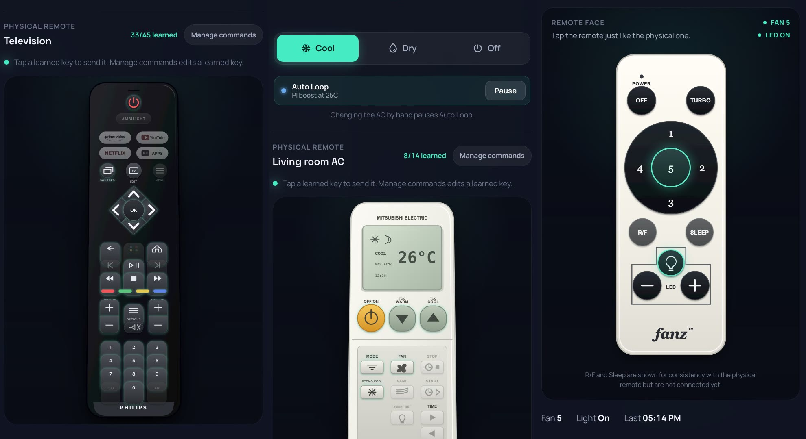
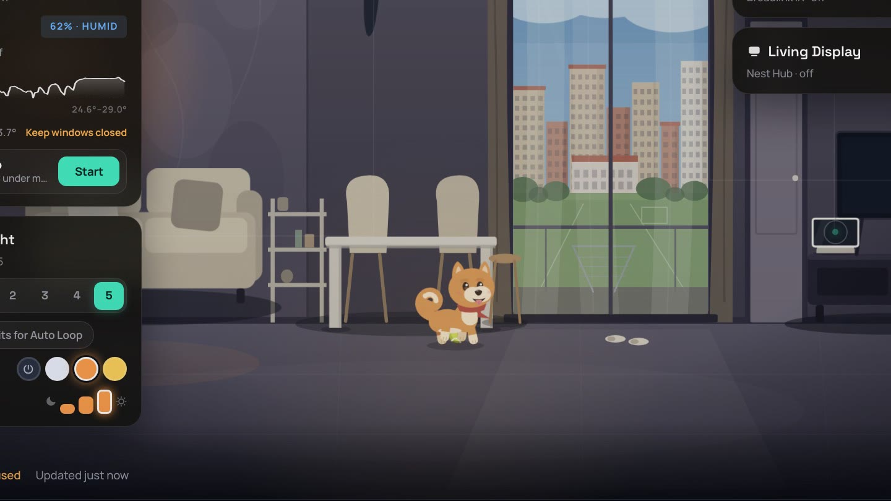
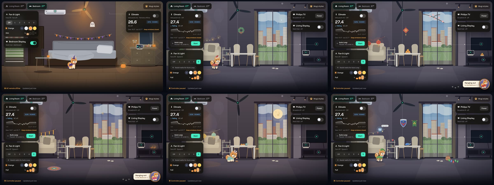
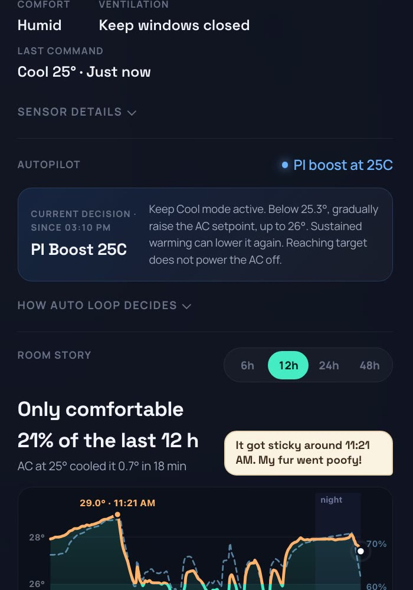
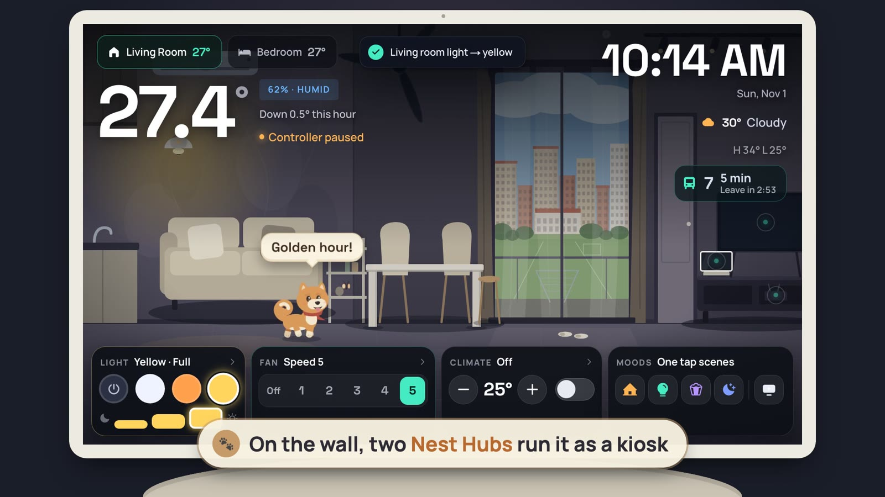

Meet Mugi: the shiba who lives in my smart home dashboard
My flat's control panel isn't a grid of toggles. It's a little illustrated living room and bedroom, with the real fan spinning, the real light glowing, and a virtual shiba called Mugi wandering between them. Google Home would never let me build this. With AI coding agents, I could just describe it and build it anyway. This is how it's built, and what I learned over-customising it.
Why a room instead of a dashboard
Every smart home app I tried looked like a settings page. I wanted something I'd actually enjoy glancing at on the wall: the room, drawn in a soft farm-game style, showing what the house is doing right now. If the ceiling fan is on speed 5, the fan in the picture is a blur. If the light is set to warm orange at two-thirds, the room glows orange at two-thirds. Tap the fan to change it. Tap the dog to pet him.
Then I added a dog, and the dog took over.
Google Home won't let you, so build around it
I started where most people do: Google Home and a couple of Nest Hubs. They're great at "Hey Google, turn off the fan". They're not great at being yours.
- The Google Home app is a fixed grid of tiles. You can rename and reorder things. You can't redesign it, draw your room, or decide what a fan "looks like".
- A Nest Hub's screen belongs to Google. There are no apps to install and no custom home screen: you get Google's controls, a clock, or your photos.
- Half my devices don't speak Google anyway. The aircon and ceiling fan only understand their own IR and RF remotes. Getting them into Google Home means a cloud bridge and a generic on/off tile, and the loop that decides when to cool doesn't exist there.
So I went around it. A Nest Hub can be cast a web page, using DashCast, the same trick you'd use to show a slideshow on a TV. My Mac mini casts the dashboard to each Hub. One catch: whenever Google takes the screen back (a voice answer, a timer, an alarm), the Hub drops the page and falls back to its photo frame for good. So the backend watches every Hub and quietly puts the dashboard back. Google still handles "Hey Google"; everything you see is mine.
Where AI comes in
A few years ago this would have stayed a sketch in my notes app. Custom IR codes, an SVG room, a cartoon dog with a schedule, a climate controller: each one is a weekend rabbit hole on its own.
This time I built it with AI coding agents (mostly Claude Code and Codex) as pair programmers. The first commit was in April; there are about 90 since. The loop is simple: I describe what I want, sometimes as loosely as "Mugi should dress up for Halloween" or "try the fan before the aircon", and the agent drafts it. Then I check it on the actual wall, tell it what's off, and we go again. Because the rooms, the remotes and Mugi are all drawn in code (SVG), the agent can draw too. That's how Mugi got his tricks and eight holiday outfits.
What the AI didn't do is decide. I still pick what's worth building and test it on the real hardware, and I set the safety rules myself: the aircon's guard rails, and the rule that the house only suggests things and waits for a yes. (ChatGPT did name Mugi, though.)
The real shift: the limit used to be "what can I build in a weekend". Now it's closer to "what can I imagine, and explain clearly". Mugi is what happens when you stop asking whether the platform allows it.
What it actually controls
Nothing here is exotic. It's cheap, mostly "dumb" hardware with a lot of software wrapped around it:
- Air conditioners via Broadlink RM4 Mini IR blasters. The RM4s also report room temperature and humidity, which feed the climate loop.
- Ceiling fans and lights (Fanz) via an RF hub, using learned button codes. Five fan speeds, and a light that cycles off → white → orange → yellow with a three-step dimmer.
- The TV, with IR power and Cast status.
- Two Google Nest Hubs as wall dashboards. They're cast a URL and run the dashboard in a no-scroll 1024×600 kiosk mode.
- An old Galaxy S20+ as the room phone. It's a light sensor (so the Hub knows the room is dark), a speaker for Mugi's voice, and a local "Hey Mugi" listener. Speech is recognised on the phone; audio never leaves it.
- Weather from the national weather service's open data (radar, two-hour forecast, nearest station), and live bus arrivals for the stops near home, with a "leave in 3 minutes" nudge.
Remotes that look like remotes

Tap a device in the room and its sheet slides in with quick controls on top and, underneath, the actual remote, drawn key for key as an SVG. The Philips has its Netflix and colour keys, the Mitsubishi has its little LCD (showing the room's temperature), and the Fanz fan remote has its round speed dial. Tapping a key on the drawing sends the same signal the real key would.
Under the hood, each key is a code the Broadlink learned from the real remote. "Manage commands" puts a key into learn mode: point the physical remote at the blaster, press the key within 30 seconds, done. Keys that haven't been learned yet are dimmed, and the sheet keeps score ("33/45 learned").
Two devices needed more than learning:
- The aircon. A Mitsubishi remote doesn't send "colder"; every press sends its whole state as a 144-bit frame. So the backend learned one good frame, decodes it, rewrites the temperature byte (degrees minus 16) and recomputes the checksum. That's how it can send an exact "Cool, 25°" for any setpoint, instead of pressing "colder" and hoping.
- The ceiling light. Its single RF key steps through off → white → orange → yellow. The backend counts presses to know the colour, so "set it to orange" becomes "press twice". If the light drifts (someone used the wall remote), one tap on the dashboard tells it what the light really shows, without sending anything.
The shape of it
The whole thing runs on a Mac mini in a cupboard. No cloud service in the middle.
Nest Hubs (cast) phone / laptop room phone (S20+)
│ │ lux · voice
└────────── Next.js dashboard ───────────────┘
│ /api
FastAPI backend (Mac mini)
┌───────────┬──────┴──────┬──────────────┬─────────────┐
Auto Loop Mugi's brain devices weather · buses SQLite
(pure policy) (LLM, no tools) IR / RF / Cast open data APIs history
- FastAPI backend. A small Python service run by
launchd. Route handlers stay thin; the decision-making lives in pure modules (the climate controller, fan assist, Mugi's line picker) with no clocks, sleeps or device calls in them, so they're easy to unit-test. - Next.js dashboard. The rooms are hand-drawn SVG components. State polls every few seconds; every visual detail is derived from it.
- Hubs as kiosks. The backend casts the dashboard URL to each Hub with
?hub=1. The page checks a build stamp every couple of minutes and reloads itself after a deploy, because nobody wants to walk over and re-cast a Hub.
Mugi


Mugi is part Tamagotchi, part house spirit. He keeps a schedule that every screen agrees on: breakfast and dinner in the living room, a walk through the doorway to the other room every half hour, butterfly patrol in the daytime, asleep in the bedroom at night. If you're looking at the living room when he leaves, you see him trot out of the door; the bedroom Hub sees him arrive.
Tap him and he does a trick (a boing, a roll-over, zoomies), floats a heart and says something. Long-press and he play-bows for a game of fetch: tap the floor and he chases the ball there and brings it back.
His brain
What Mugi says comes from the house's real state. Every so often the backend gathers plain facts (it's 30° and cloudy, the living-room fan is on, the bus leaves in four minutes, it's Sunday evening) and asks a language model, through a CLI with no tools, no shell and a JSON schema, for a pool of short lines in Mugi's voice. The rules are simple: two to ten words, ground every line in the facts, never invent numbers, never give orders. The dashboard then picks lines that fit the moment.
His reactions are local and instant: flip the lights to yellow and he'll comment on it; switch the fan on and it's "So breezy!" When the house wants to suggest something ("it's getting humid, start the Auto Loop?"), it asks first, on the dashboard or on Telegram. It never just does it.
Moods and seasons
Four one-tap mood scenes (Welcome home, Focus, Movie night, Goodnight) are built only from commands the dashboard already sends, planned against the current state, so they only press what actually needs to change.

Around holidays the rooms decorate themselves and Mugi gets a costume: a witch hat for Halloween, a floppy Santa hat for Christmas, a red silk cap for Lunar New Year, rabbit ears for Mid-Autumn, marigolds for Deepavali, and a few more. A ?season= query previews any of them out of season, which is how this post got its pictures.
The Auto Loop: a PI controller that only has a remote
The serious part is the living room's climate controller. The interesting constraint: an inverter aircon already runs its own compressor loop, and all I can do from outside is press remote buttons. So the Auto Loop doesn't control power. It controls which setpoint the AC is given, and lets the inverter do the rest.
The loop, step by step
- Sense. The RM4's temperature and humidity readings are smoothed with an exponential moving average (α = 0.35), and the loop tracks how fast the room is warming or cooling, in °C per minute.
- Error.
e = filtered temperature − 25.5 °C. - PI output.
u = 1.2·e + 0.08·∫e. The integral builds up while the room stays warm, so a stubborn afternoon earns more cooling than a brief spike. - Pick a setpoint. When the room reaches 25.8° the AC starts at an eco 26°. If
uclimbs past 0.5 (or the room is half a degree over target) and the room isn't already cooling quickly, it boosts to 25°. Once the room drops below 25.3° it eases back up towards 26°. It moves one degree at a time, at most every 15 minutes, because the room needs that long to show the effect. - Don't switch off at target. Reaching 25.5° doesn't power the AC off. A warmer setpoint lets the inverter idle down, which is gentler and cheaper than cycling.
I didn't add a derivative term. The room is slow and the sensor is noisy, so a D term would mostly amplify noise. Instead the measured cooling rate acts as a brake on boosting: if the room is already falling, don't push harder.
Anti-windup matters more than the gains. The integral is clamped to ±4. It's frozen while the setpoint is already at the limit it's pushing against (no point asking for "colder" at 25°). And it decays by half every five minutes whenever the AC isn't cooling, so stale demand from the afternoon never carries over into an evening start.
The guard rails
- Cycle protection: at least 10 minutes between compressor starts or mode changes.
- Daily budget: 8 hours of cooling a day; after that the AC stays off until tomorrow.
- Overcool protection: off if the room is at or below 24° for 5 minutes, or sits at 24.5° for 15 minutes even at the warmest setting.
- Dry mode: if humidity stays at 65% or above for 15 minutes in a warm room, it starts in Dry instead, and hands back to Cool once the air is dry enough.
- Hands off: touching the AC yourself pauses the loop. It never fights you.

Fan first
The newest piece is fan assist. Moving air feels cooler immediately; an AC setpoint change takes a quarter of an hour to notice. So the fan is now the loop's first stage. It follows a comfort score, the PMV (Predicted Mean Vote) from ISO 7730: 0 is neutral, +0.5 is "slightly warm". The score counts humidity, a seated person in a T-shirt, and walls that are warmer than the air on a hot afternoon. As the score rises the fan steps to 2, then 3, then 5, one step at a time with some hysteresis so it doesn't flap at a threshold. Only then does the AC come in.
Why PMV instead of temperature? 27° at 55% humidity and 27° at 75% feel completely different. A comfort score lets one number drive the fan, and the dashboard can show it in words ("Warm", "Comfortable") instead of a raw temperature.
The Hub kiosk

The Hub gets its own layout: no scrolling, big type, and a dock along the bottom with the light, fan, climate and mood buttons. When the room goes dark at night (the room phone's light sensor says so) the Hub fades to a dim clock so it doesn't light up the bedroom, and the first tap only wakes it. That way you can't switch something by accident in the dark.
Lessons learned
- IR is fire-and-forget, so be honest about state. The AC never tells you what it's doing. The backend keeps "what I last sent" separate from "what I've actually observed", and the dashboard says unverified rather than pretending.
- Model the hardware's quirks instead of fighting them. The ceiling light has one RF button that cycles colours. "Set it to orange" means knowing where in the cycle it is and pressing the right number of times. When the colour is unknown, it refuses rather than guessing.
- Keep policy pure. The controller, fan assist and Mugi's line picker are plain functions: facts in, decision out. That's what makes it safe to keep adding features to something that runs your AC unattended.
- Protect the compressor, and your bill. Cycle protection and a daily runtime budget sit underneath everything. A clever feature that short-cycles the AC isn't clever.
- Try the fan first. A comfort score plus a ceiling fan takes the edge off long before the AC needs to work hard.
- Kiosks need to look after themselves. Self-reload on deploy, a dark-room mode, and a first tap that only wakes the screen. Nobody wants to reboot a Hub on the wall.
- Keep the AI on a short leash. The model writes a dog's one-liners from given facts, in a schema, with no tools. Anything that changes the house is suggest-then-approve.
- A character makes people use it. Nobody opened the old toggle grid for fun. Everybody says hi to Mugi.
Want to build one?
You don't need my exact hardware. The recipe that matters:
- One small backend you own, with pure, tested policy modules and thin routes.
- Cheap IR/RF blasters plus learned codes, and honest "sent vs observed" state.
- A dashboard drawn as your actual room, where every pixel is derived from state.
- Something alive in it. It doesn't have to be a shiba, but it should be a shiba.
And if your smart home app won't let you, that's no longer the end of the conversation. Describe what you'd love to see on your wall, build it one small, tested change at a time with an AI pair programmer, and keep the decisions for yourself. Questions welcome. Mugi says *tail wag*.